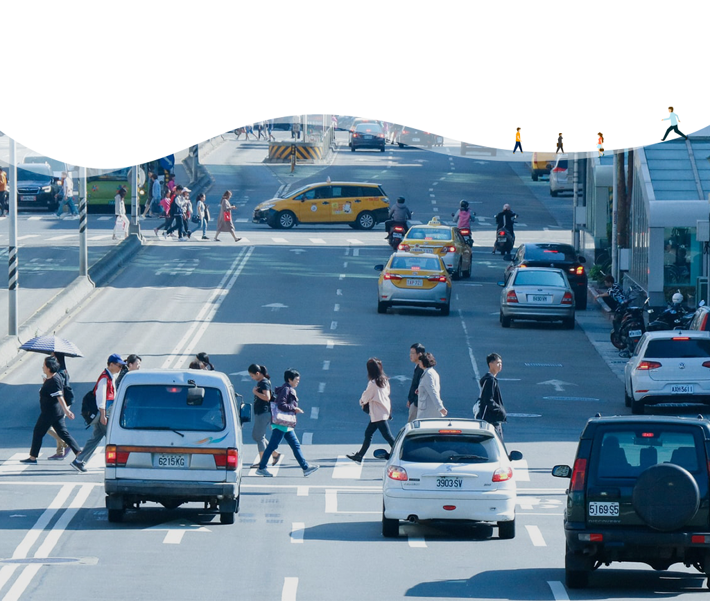
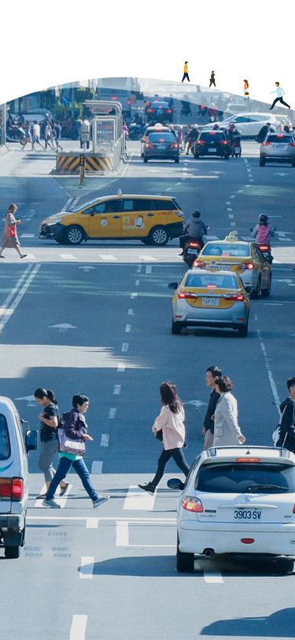

景點列表
|
進階搜尋


進階搜尋
或許我可以去...
誰說旅行不能現在就走?
開啟一場隨機出發的探險吧！
換一組
熱門景點
請選擇您喜愛的景點類別
熱門景點
遊憩類
溫泉類
藝術類
都會公園類
自然風景類
體育健身類
熱門景點
遊憩類
溫泉類
藝術類
都會公園類
自然風景類
體育健身類
篩選條件
請選擇區域
(可複選)
中正區
大同區
中山區
松山區
大安區
萬華區
信義區
士林區
北投區
內湖區
南港區
文山區
請選擇類型
(可複選)
熱門景點
遊憩類
溫泉類
藝術類
自然風景類
體育健身類
都會公園類